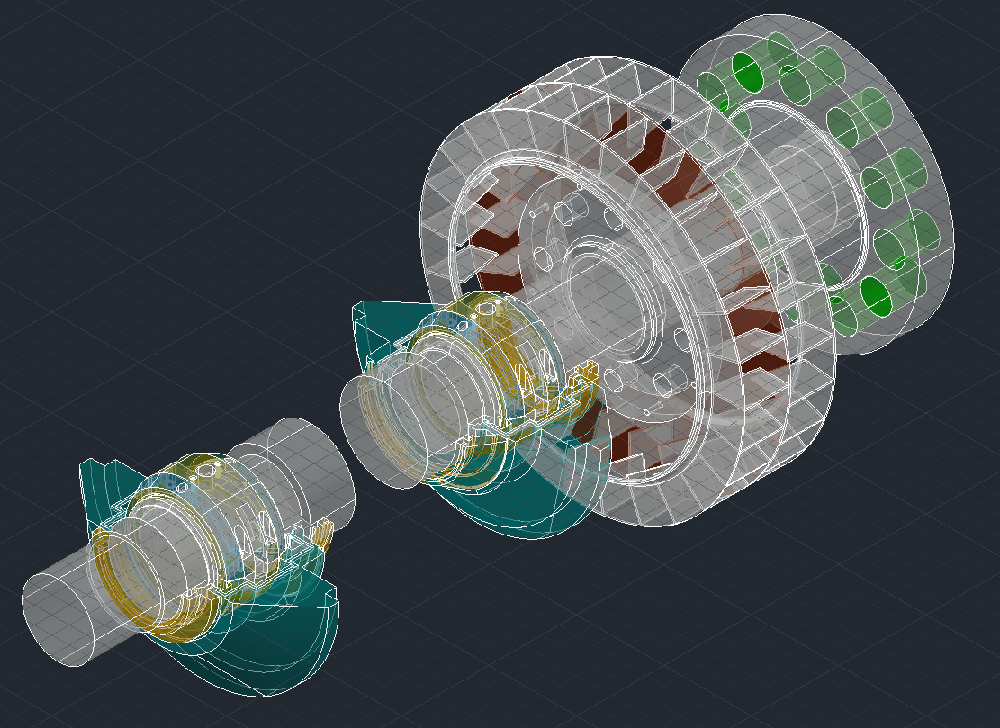

Mechanical Design / CAD Drafting
Solar Skid Design
Mechanical skid concept including CAD development, rendering, and technical documentation.
ENGINEERING PROJECT LIBRARY
Browse engineering projects, CAD models, manufacturing drawings, reverse engineering work, and technical documentation.
A selected project showing practical CAD development, mechanical design, and engineering documentation.

Design and development of a roller support assembly focused on alignment, maintainability, structural support, and reliable operation.
Projects Supported
Engineering Drawings
CAD Platforms
Client Focused
Mechanical skid concept including CAD development, rendering, and technical documentation.

Sample CAD modeling work including capture, wireframe, rendering, and assembly views.

Reverse engineering and workshop drawing support for maintenance, fabrication, and machine repair.